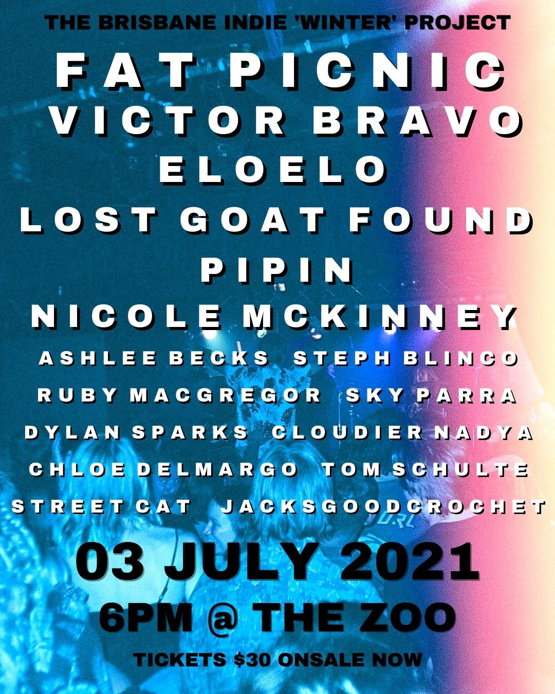

In light of COVID 19’s impact on small arts initiatives,This event is to celebrate and showcase the emerging artists and musicians within the creative Brisbane Scene. It is an opportunity to showcase their talent, network with like minded people and expand their audience.For the ‘Winter’ event, we have an amazing lineup of six bands being: Fat Picnic, Victor Bravo, Eloelo, Lost Goat Found, Pipin, and Nicole Mckinney. Accompanied by an extensive art market by 10 talented artists being; Ashlee Becks, Ruby Macgregor, Sky Parra, Steph Blinco, Jacksgoodcrochet, Dylan Sparks, Chloe Delmargo, Street Cat, Cloudier Nadya and Tom Schlute.
The Brisbane Indie Project Winter Festival will be held at The Zoo in Fortitude Valley at 7pm on the 3rd of July 2021
Festival Tickets can be found hereThe Brisbane Indie Project on the 28th November 2020, The Brightside Brisbane ft. live music performances from The Baby Breaks, Big Dinner, Allora and New Living and 2D + 3D art installations from talented local artists.
Click here for galleryWhile we work on the next festival, we have provided a form for you to complete if you would like to be a part of future events!